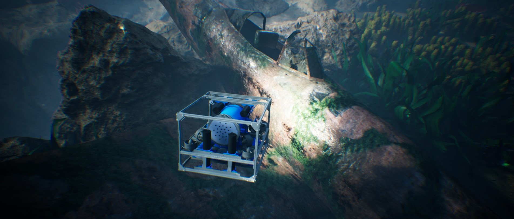

Welcome to BiguaSim’s documentation!

BiguaSim is a high-fidelity simulator developed by the Nautec at Federal University of Rio Grande .
Built upon Unreal Engine (by Epic Games) and Holodeck (developed by the BYU PCCL Lab), BiguaSim enables easy simulation of marine robotics and autonomy with a wide variety of sensors, agents, and features.
Features
3+ rich worlds with various infrastructure for generating data or testing underwater algorithms
Complete with common underwater sensors including DVL, IMU, optical camera, various sonar, depth sensor, and more
Highly and easily configurable sensors and missions
Multi-agent missions, including optical and acoustic communications
Novel sonar simulation framework for simulating imaging, profiling, sidescan, and echosounder sonars
Imaging sonar implementation includes realistic noise modeling for small sim-2-real gap
Easy installation and simple, OpenAI Gym-like Python interface
High performance - simulation speeds of up to 2x real time are possible. Performance penalty only for what you need
Run headless or watch your agents learn
Linux and Windows support
Attribution and Relevent Publications
If you use BiguaSim in your research, please cite the following publications depending on the features you use as outlined below:
General BiguaSim use:
@inproceedings{Potokar22icra,
author = {E. Potokar and S. Ashford and M. Kaess and J. Mangelson},
title = {Holo{O}cean: An Underwater Robotics Simulator},
booktitle = {Proc. IEEE Intl. Conf. on Robotics and Automation, ICRA},
address = {Philadelphia, PA, USA},
month = may,
year = {2022}
}
Simulation of Sonar (Imaging, Profiling, Sidescan) sensors:
@inproceedings{Potokar22iros,
author = {E. Potokar and K. Lay and K. Norman and D. Benham and T. Neilsen and M. Kaess and J. Mangelson},
title = {Holo{O}cean: Realistic Sonar Simulation},
booktitle = {Proc. IEEE/RSJ Intl. Conf. Intelligent Robots and Systems, IROS},
address = {Kyoto, Japan},
month = {Oct},
year = {2022}
}
BiguaSim Documentation